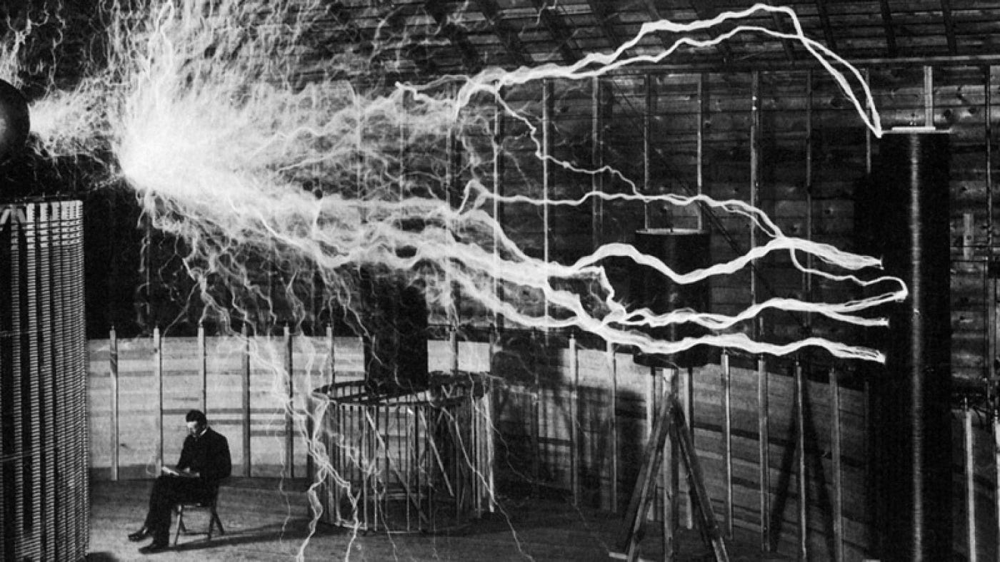
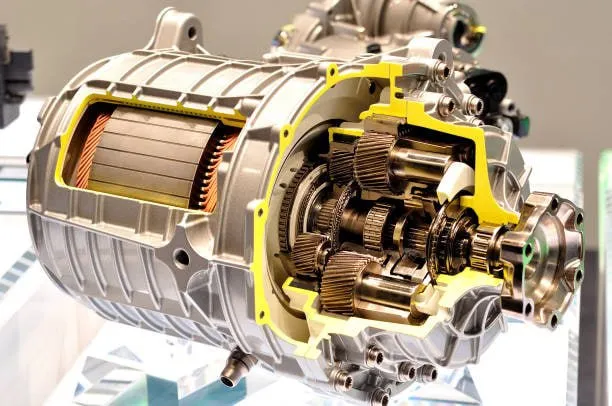
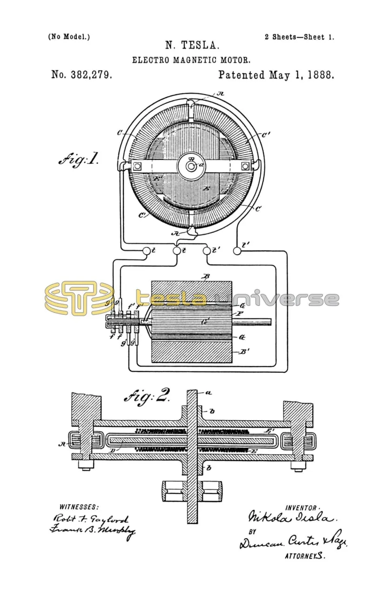
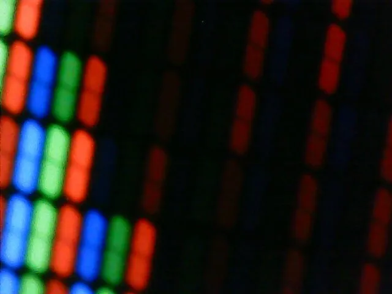
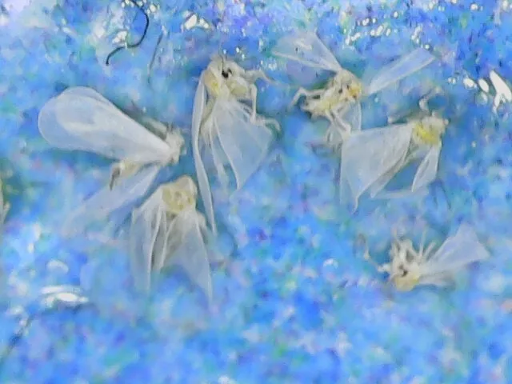

Blog & Makaleler
Mühendislik, donanım mimarileri, Linux ekosistemi ve düşüncelerim üzerine yazılar.

Görsel Şölenin Arkasındaki Deha: Tesla Bobini Nedir, Nasıl Çalışır?
Tesla bobinin çalışma mekanizması

Efsaneden Mikroskoba: Meryemana Dikeninin Büyüleyici Dünyası
Deve Dikeninin güzel Tarihi ve Biyolojik dünyası

Elektrikli mi, Fosil mi? Geleceğin Ulaşım Teknolojilerine Derin Bir Bakış
Elektrikli araçlarla fosil araçları yan yana koyup tartıyoruz.

Geleceğin Çatışma Sebebi mi? Periyodik Cetvelin Gizli Stratejisti: Germanyum
Silikondan bahsederken unuttuğumuz ama unutmamamız gereken bir yarıiletkenin hikayesi.

Isıdan Harekete: Nikola Tesla ve Termo-Manyetik Motorun Büyüleyici Hikayesi
Teslanın İnanılmaz Isı-Hareket Dönüşüm Makinesi

RGB Ekranlar Nasıl Çalışır ve 16'lık Renk İfade Sistemi
Tüm renkler üç ana rengin farklı tonlarda karışımıyla oluşur (Bilgisayar Dünyasında)

Sera Sineği Baskını
Bitkilerime musallat olan sinekleri bilimsel inceleme kadavralarıma çeviriyorum.